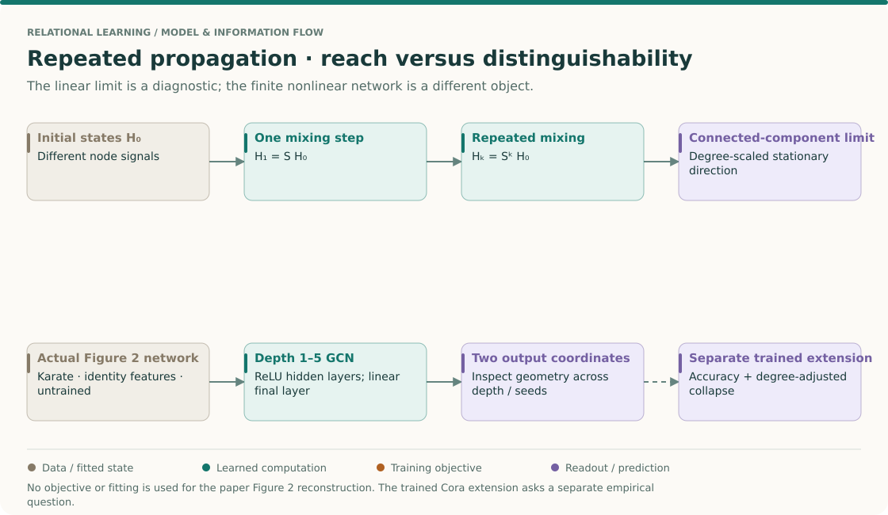
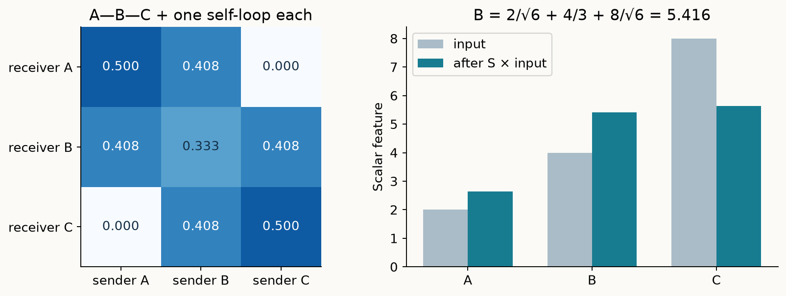
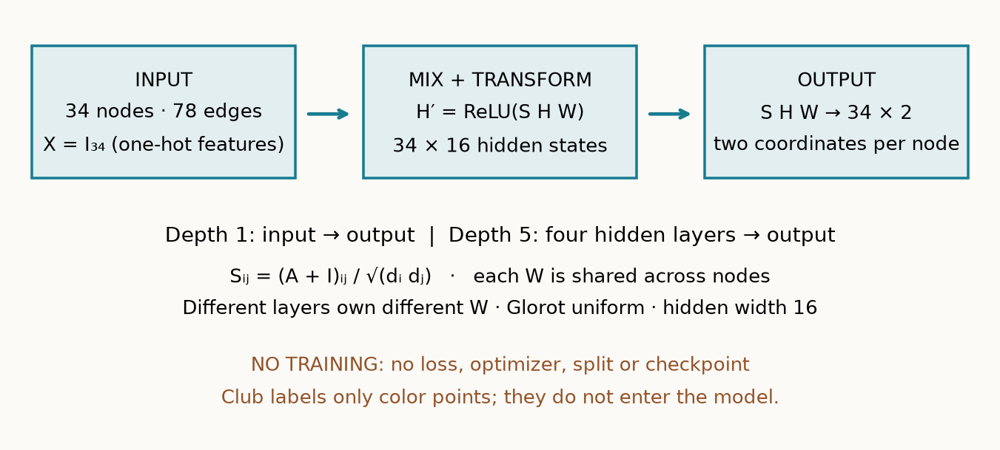
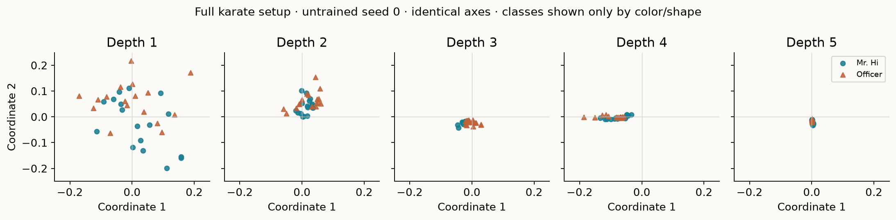
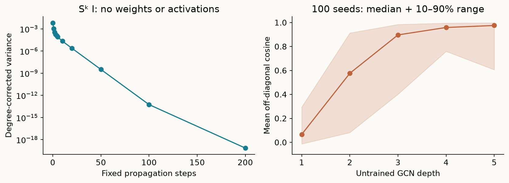
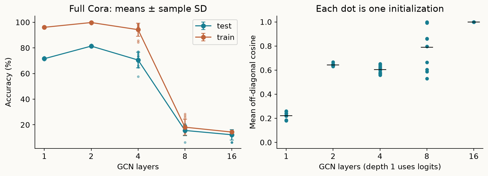

Year 3 · Quarter 1 · Lesson 085
Over-smoothing: when more neighbors erase distinctions
Depth is a trade-off · distinguish mixing from optimization
Your win¶
Diagnose whether repeated graph propagation is erasing distinctions between nodes. You will derive a three-node limit, reproduce the full setup of Li, Han and Wu’s karate-club visualization, and compare trained GCN accuracy with representation similarity as depth increases. This matters for the mission: a larger relational neighborhood is useful only if the model can preserve the distinctions needed for prediction.
Start with the 25-minute explanation. The notebook is a separate implementation session. The short karate experiment and the longer Cora diagnostic have separate commands and evidence.
Retrieve before reading¶
Without opening earlier lessons, write down the GCN propagation rule, explain what a GAT attention coefficient normalizes over, and name the labels allowed to influence stopping.
Check your recall
A GCN layer computes H′ = σ(SHW), with S determined by the graph and augmented degrees. GAT normalizes scores over one receiver’s allowed senders within one head. Validation labels may control stopping; test labels score the frozen result. See L082 and L084.
THE BIG PICTURE · LESSON 085
Build on what you know. Lessons 82–84 expanded a node’s receptive field through graph mixing. Lesson 77 taught us to look for representation collisions. Over-smoothing asks whether repeated propagation makes initially different node signals difficult to distinguish.
The next question. Lesson 86 implements the operator in PyG. Preserve this diagnostic when changing tooling: an implementation can be numerically correct and still embody a poor depth choice for a task.
Open the SSL → relational → graph model map · Work the cold retrieval first, then spend 15–20 minutes tracing this overview before the detailed mechanism and lab.
More reach can leave less distinction¶

Read the claim at its mathematical scope¶
Read Li et al. §3 and Figure 2. Separate three objects: repeated multiplication by a fixed support S, an untrained nonlinear GCN of finite depth, and a trained model with a task metric. A statement about one is a motivation for checking the others, not automatic empirical proof.
Use a two-node calculation to see the mechanism¶
- Choose a graph where the arithmetic is exact. Two connected nodes, each with a self-loop, have S=[[1/2,1/2],[1/2,1/2]]. Let their scalar states be [2,8].
- Apply one step. Both new states are 5. The common component is preserved while their difference is erased. Repeating this particular S cannot restore the lost distinction.
- Distinguish this example from an unequal-degree graph. Under symmetric normalization, the stationary direction within a connected component is proportional to √degree. Raw node states can remain numerically different due to degree even when non-stationary information has vanished. The lesson's degree-adjusted diagnostic accounts for this.
- Keep components separate. Disconnected components do not exchange messages. A graph with two components can retain different stationary signals in each. Claiming every node in every graph must converge to one identical vector is too strong.
- Add learned transformations cautiously. ReLU, layer-specific W and finite training change the dynamics. The linear calculation explains one pressure from repeated mixing; it does not determine the accuracy curve of every nonlinear GNN.
- Compare geometry with task performance. Record both a collapse diagnostic and held-out performance for the trained extension. Poor accuracy without measured collapse may be an optimization or information-access issue. A low-rank representation can still retain exactly what a simple target needs.
Predict: is multiplying all states by 0.001 proof of over-smoothing?
No. It reduces absolute distances while preserving relative directions and distinctions. A useful diagnostic must distinguish shrinking scale from losing node-specific information. Inspect normalization and the stationary subspace rather than relying only on raw pairwise distance.
Your intermediate artifact: compute the two-node example, then write a sentence identifying which features of it fail on an unequal-degree disconnected graph. For the paper Figure 2 route, remember that the networks are untrained: colored output geometry is not a reported classification score.
Why another layer can remove information¶
In L084, attention let a node weight its neighbors differently. Depth asks a separate question: what happens when we repeatedly mix already-mixed representations? Attention does not, by itself, guarantee that distinctions survive arbitrary depth. This lesson analyzes a fixed GCN propagation matrix. It does not prove a limit for every feature-dependent attention network.
In plain terms. Mixing helps when nearby nodes carry complementary evidence about the same class. Repeated mixing can also blur evidence across class boundaries. A larger receptive field—the set of nodes that can affect a prediction—therefore has a cost.
Over-smoothing means node representations lose discriminative differences through repeated graph mixing. A representation is the vector of numbers carried by a node. A connected component is a group of nodes linked by paths, with no path to the rest of the graph. Mixing cannot cross components with no connecting edge. Primary reading: Li et al., §3, “When GCNs Fail”.
Work one propagation step¶
Worked example. Take the undirected path A—B—C, initial scalar features [2,4,8], and add one self-loop at every node. The augmented degrees are [2,3,2]. Here “degree” counts neighboring edges plus the added self-loop.
Ordinary neighborhood averaging uses P = D̃⁻¹(A+I). Its first output is [3,14/3,6], approximately [3,4.667,6]. The first node averages 2 and 4; the middle averages all three values. Every row of P sums to one.
GCN uses symmetric normalization, S = D̃⁻¹/²(A+I)D̃⁻¹/². An edge from j to i gets weight 1/√(d̃_i d̃_j). Its first output is approximately [2.633,5.416,5.633]. For B, the calculation is 2/√6 + 4/3 + 8/√6. These rows need not sum to one. I is the identity matrix and D̃ is the diagonal matrix containing the augmented degrees.

Predict first: after 100 steps, will raw GCN features be identical? Will removing B—C prevent A and C from mixing? Change the controls only after committing an answer. The widget holds features fixed and recomputes from depth zero for each intervention.
Derive the limit instead of memorizing “collapse”¶
In plain terms. Repeated propagation preserves one special direction in each connected component. Other directions shrink. For symmetric normalization, the preserved direction grows with the square root of degree.
Find the preserved direction. Write q_i = √d̃_i / √Σ_j d̃_j on this connected graph. Multiplying gives S q = q: the right degree factor cancels the square root in q, summing a row of A+I gives d̃_i, and the left factor leaves √d̃_i. Thus q is a unit-length eigenvector with eigenvalue 1. An eigenvector is a direction that multiplication only rescales; its eigenvalue is that scale.
Repeat the multiplication. Since S is symmetric, it has orthogonal eigenvectors. Expand a feature column in those directions. Applying S k times multiplies each coefficient by λ^k, where λ is that direction’s eigenvalue. On a finite connected undirected graph with positive self-loops, every other eigenvalue has absolute value less than 1. Those terms vanish as k grows. Therefore S^k X → q(qᵀX).
Check the numbers. For our path, the limit is approximately [4.257,5.213,4.257]. Raw values differ because B has larger degree. Dividing each row by √d̃_i produces the same value, approximately 3.010. Ordinary averaging instead converges to a degree-weighted mean, (2×2 + 3×4 + 2×8)/7 = 32/7, at every node.
Several components. There is one preserved direction per component. A global variance can remain positive even after complete mixing within every component. Do not mistake separated components for a failed theorem.
Low-pass intuition. A graph frequency describes how much a direction varies across linked nodes. Slowly varying directions survive longer. Repeated propagation suppresses many rapidly varying directions; negative eigenvalues can cause alternating intermediate signs. “Low-pass” is an intuition about this filtering, not a claim that every raw statistic decreases at every step.
Scope check. This limit is for repeated fixed linear propagation. A trained GCN also changes channel weights and applies nonlinearities. The theorem motivates a diagnostic; it does not prove every deep model fails. The paper’s prose describes square-root-degree scaling; the executable
S√d̃ = √d̃check is the authority for our normalization convention.
Measure collapse without confusing it with shrinking¶
Implement three live notebook functions: smooth, collapse_metrics, and graph_layer. The complete model, data loader and Cora trainer are provided inline. Your functions feed the experiments.
corrected = h / degrees.sqrt()[:, None]
degree_variance = (corrected - corrected.mean(0)).square().mean()
norm = h.norm(dim=1)
u = h[norm > 0] / norm[norm > 0, None]
mean_cosine = (u.sum(0).square().sum() - len(u)) / (len(u)*(len(u)-1))
Degree-corrected variance measures spread after dividing out the known degree factor. It approaches zero for our connected fixed propagation example. It is scale-sensitive: multiplying every feature by 0.001 also reduces it by a million, without making directions more alike.
Mean off-diagonal cosine similarity compares directions of distinct nonzero node vectors. A cosine of 1 means matching directions, 0 means perpendicular directions, and −1 means opposite directions. Normalization removes magnitude. The sum formula avoids constructing all node pairs. Zero vectors have no direction; the implementation excludes them and reports their count. Fewer than two nonzero rows makes the statistic undefined, represented by None.
Use both. Also inspect feature RMS, the square root of the average squared coordinate, and training accuracy. If accuracy drops while similarity stays modest, optimization or a poor representation may be involved. If variance drops only because RMS shrinks, you have not established directional collapse. There is no universal similarity threshold for task failure.
Reproduce the paper’s actual figure¶
Named target: Li et al. Figure 2. All 34 karate-club nodes, 78 undirected binary edges, identity features of shape [34,34], GCN depths 1–5, hidden width 16, output width 2, and Glorot random initialization. Glorot uniform draws each weight from a symmetric interval with bound √(6/(fan_in+fan_out)). The networks are untrained. Class labels color the output points; they never enter the forward pass. There is no optimizer, objective, training split, checkpoint selection, or accuracy target in this experiment. Paper §3.

Hidden layers apply ReLU(SHW), where ReLU replaces negative values with zero. The final layer returns two linear coordinates. Parameters are shared across nodes within a layer, but layers own different weights. Depth 1 maps 34 inputs directly to 2 outputs. Depth 5 uses four 16-coordinate hidden layers and a final 2-coordinate output. Evaluation mode disables dropout. These conventions follow the pinned released model.
Predict before revealing: should every random seed show its clearest separation at depth 2? A single illustration cannot answer that stability question.

Author experiment. All five depths ran for 100 declared seeds: 500 full-graph forward experiments. Seed 0 is displayed without visual selection; all coordinates are saved. Identical axis limits make shrinking visible. Because random output coordinates can rotate and change sign between networks, compare class mixing within a panel, not the identity of a coordinate across depths. The notebook lets you inspect other seeds.

The separate fixed-propagation curve removes random weights and activations. It isolates the linear mechanism tested by the theorem. The random-network curve reports the median and 10th–90th percentiles over seeds; it measures initialization variability, not uncertainty over independent graphs. A small variance alone is not a reproduction of the paper’s visual class-mixing claim.
Scope check. Full setup reconstruction is executed. Exact historical figure parity is INCOMPARABLE: the inspected release does not supply the Figure 2 seed, weights, or plotting driver. Hidden ReLU and linear output use its GCN conventions. No seed is chosen to imitate the published picture. The paper’s co-training and self-training benchmark tables are separate and NOT_RUN. See the protocol audit.
Does a trained model lose accuracy too?¶
Held fixed. Full Cora graph, the L082 fixed label split, row-normalized features, hidden width 16, Adam learning rate 0.01, dropout 0.5, and the same validation stopping rule. Only depth varies across [1,2,4,8,16]. Ten initialization seeds are declared per depth. Both nodes and edges of the transductive graph are visible during training, but only training labels enter the loss.
Measured. Test accuracy after stopping, training accuracy, and the last hidden representation’s similarity, variance and RMS. Depth 1 has no hidden layer, so its diagnostic uses output logits and is marked separately. The optimizer gets at most 200 epochs; the loss includes L082’s first-weight L2 penalty. The parameter count changes with depth, so this is a practical depth diagnostic rather than a pure intervention on mixing alone.
Fresh author results, separate from your kernel:
| Depth | Test accuracy, mean ± sample SD | Mean cosine |
|---|---|---|
| 1 | 71.57% ± 0.69 pp | 0.221 |
| 2 | 81.40% ± 0.64 pp | 0.643 |
| 4 | 70.52% ± 6.17 pp | 0.603 |
| 8 | 15.60% ± 4.04 pp | 0.789 |
| 16 | 12.24% ± 4.06 pp | 1.000 |

Read these measurements carefully. The four-layer model has lower average cosine than the two-layer model, despite worse accuracy. The sixteen-layer model has cosine approximately 1 and poor training accuracy as well as poor test accuracy. The first observation refutes a simple rule that every extra trained layer must increase this statistic. The second is consistent with severe representation collapse, while the optimization failure still needs attention. Preserve both observations in your diagnosis.
Interpret the combination. Use training accuracy to detect failure even on supervised nodes. Use cosine together with the count of nonzero rows and RMS to inspect representation loss. Test scores describe this fixed graph and split. Do not select a deployment depth using the test curve; that would require a separate validation-only choice and untouched evaluation.
Scope check. This is a locally specified extension of the L082 GCN experiment. It is not Li et al.’s Figure 2 or their random-split classification tables. Seeds are repetitions on one graph, not independent datasets. A falling curve supports a failure diagnosis for this setup, not a universal depth limit.
Remedies are hypotheses to test¶
Residual paths add an earlier representation to a later one, creating a route that bypasses some transformations. They can improve optimization and retention. A simple lazy average (1−α)I+αS still has the same eventual fixed subspace for 0<α≤1; slowing mixing is not eliminating its limit.
Retaining original features gives a predictor direct access to information that propagation may erase. Changing edges or aggregation changes the mixing operator and its trade-offs. Test a remedy with validation-only choices and matched compute. None of these names guarantees a gain.
Over-squashing is different. It describes too many distant signals being compressed through a limited communication path or fixed-width representation. Over-smoothing describes representations becoming insufficiently distinct. A model can exhibit either, both, or neither. This distinction will matter when relational graphs contain high-degree hubs and long dependency chains.
Lab and exit artifact¶
Open the student notebook. Implement the three TODOs, pass the arithmetic and component checks, run the named karate experiment, then run or inspect the separately labeled Cora evidence. Full commands and pinned dependencies are in the reproduction contract.
Submit your result JSON, depth-versus-accuracy and similarity curves, and a short diagnosis. Explain why equal raw features are the wrong symmetric-normalization target; show a disconnected counterexample; distinguish the untrained paper figure from trained accuracy evidence; and propose one validation-only remedy experiment. Change one operator deliberately and include the failing CHECK plus your repair.
Ask the agent follow-up questions and paste your diagnosis for strict feedback. Generating or executing this lesson does not mark it mastered. Keep the reference card for spaced review. The next curriculum lesson introduces PyG: use these numerical contracts to check that a library pipeline computes the intended graph operations.